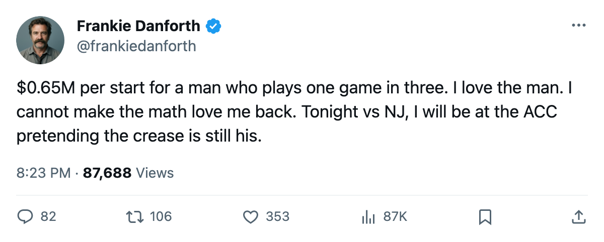

DANFORTH: $6.50M buys 10 starts and a folding chair, and I have made peace with hating it
I still trust Belfour more than anyone else in this crease. I also know what his contract costs the team that will not play him.
 Frankie DanforthColumnist · Queen City Telegram
Frankie DanforthColumnist · Queen City Telegram
 Ed Belfour93 is 39 years old. He has started 10 of 26 games. He earns $6.50M on a one-year deal. He is the backup.
Ed Belfour93 is 39 years old. He has started 10 of 26 games. He earns $6.50M on a one-year deal. He is the backup.
I have spent this entire season arguing that the crease belongs to him. I argued it when  David Aebischer86 came in hot. I argued it through the shutouts. I still argue it. But the arithmetic stopped being a metaphor somewhere around game 8 and became a number I cannot unsee.
David Aebischer86 came in hot. I argued it through the shutouts. I still argue it. But the arithmetic stopped being a metaphor somewhere around game 8 and became a number I cannot unsee.
Belfour costs the  Toronto Maple Leafs $0.65M per start. Aebischer, who is 26 and has started 14 games, costs $0.04M per start. One of those numbers belongs to a man on the bench more often than in the net.
Toronto Maple Leafs $0.65M per start. Aebischer, who is 26 and has started 14 games, costs $0.04M per start. One of those numbers belongs to a man on the bench more often than in the net.
On the Book, Belfour reads 91. Aebischer reads 84. The Bureau's Development Index has neither listed as a riser or a feller. Both sit at their base. No surge. No slide. Just one man earning 13 times what the other earns for what the Index calls comparable current form.
Wait, I did that in my head. Scratch that. The point stands: 91 versus 84, both at base, and the coach decided in late November that a 7-point grade gap does not outweigh 14 starts of hot goaltending. I want 91 in the crease. The coach wants the hot hand. We are both right and the crease has already chosen.
Aebischer is signed for 1 year at $0.50M. He is 26, his potential reads 90, and his morale sits at 80. If he keeps starting and keeps winning, the next negotiation will not end at $0.50M. The Index has him at his base. The market pays hot hands a premium in July.
I am not going to pretend the salary gap does not bother me. I am not going to pretend 10 starts are enough for a $6.50M player who could still steal a 7-game series from anyone alive. Those two thoughts are fighting inside my head and one of them wins in July, whichever way the front office swings.
The crease is settled. It is not Belfour's crease anymore. The only question left about him is whether the front office re-signs a $6.50M backup at 39, cuts him, or trades what's left. I do not envy them the call. I do not want to be the one who has to explain it to me after.
